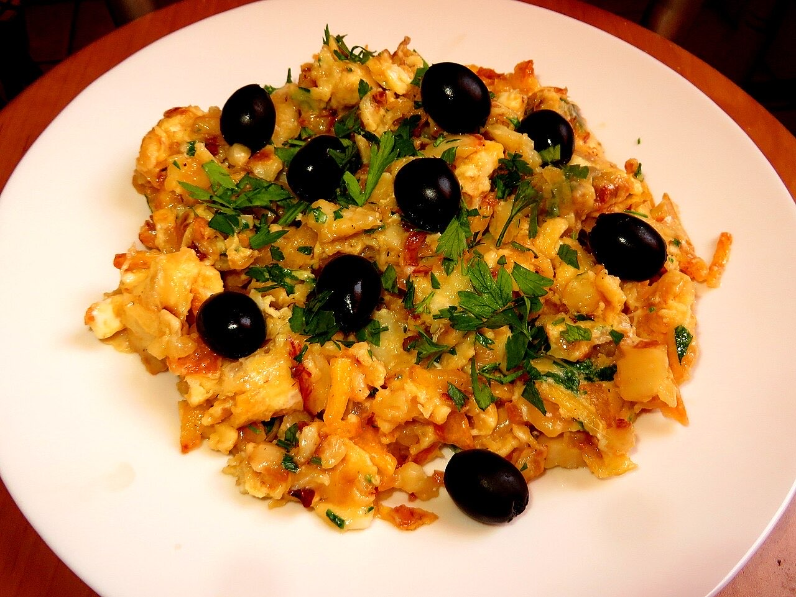
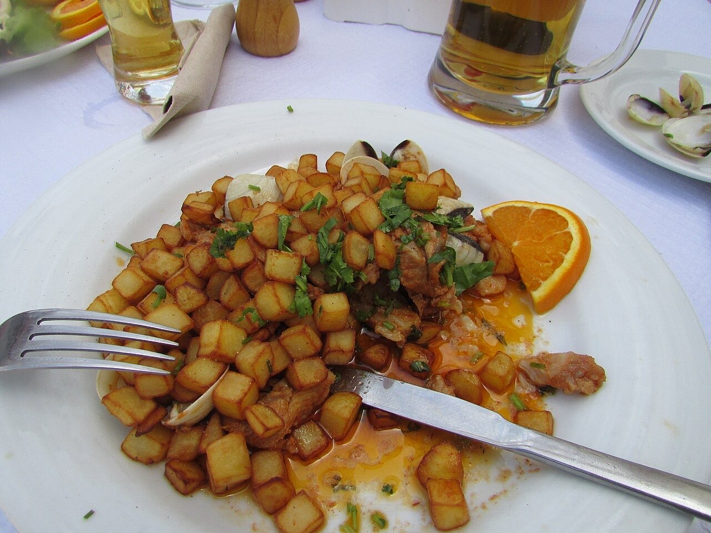
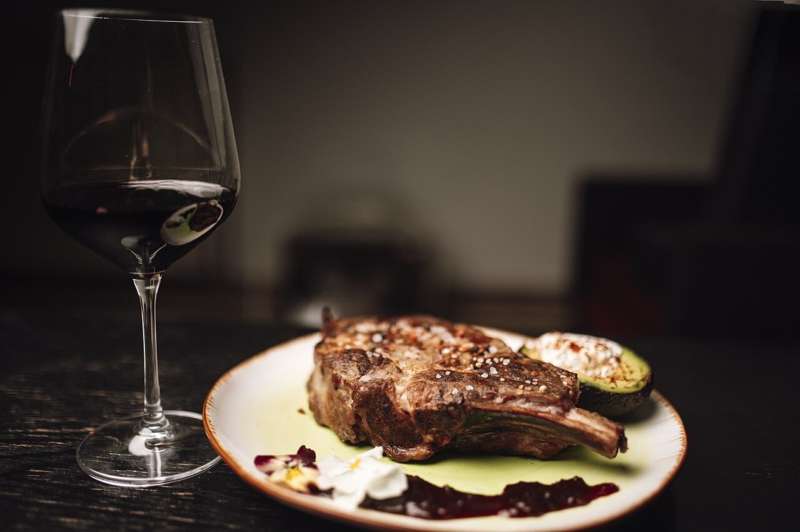
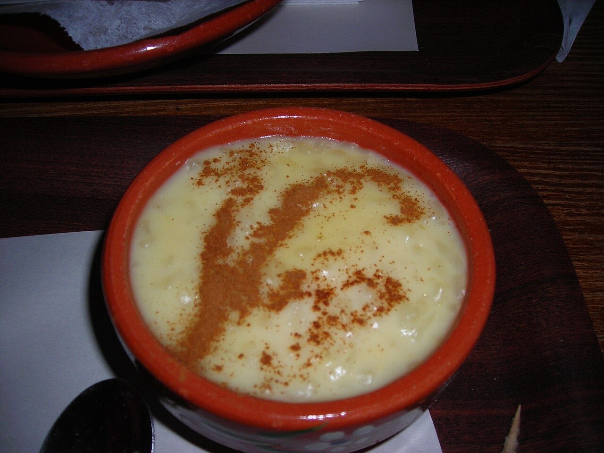

Traditional Portuguese cuisine · Moreira de Cónegos
Restaurante Xiquinho
Classic dishes in Moreira
Restaurante Xiquinho serves traditional Portuguese food on Rua das Vinhas, in Moreira de Cónegos. Classic dishes to share at the table with family and friends.
Traditional cooking
Portuguese dishes for an unhurried meal.
With family
A table to bring together those who love good food.
Rua das Vinhas
In Moreira de Cónegos. Book by WhatsApp or phone.



Illustrative photos · the final site uses your own.
Booking request
Book your table
Pick the day and time. The request arrives by WhatsApp and we confirm right away.
This is how the message would reach your WhatsApp. Nothing is sent in this demo.
Visit
Where to find us
R. das Vinhas 46, 4815-291 Moreira de CónegosOpening hours
Opening hours to be confirmed
Proposal for Restaurante Xiquinho
Like it? This could be your website.
This page was made especially for your business by João Machado, a web developer here in Guimarães. It includes:
- Fast mobile page with your name and identity
- Menu and prices that are easy to update
- Buttons to call, send a WhatsApp and get directions
- Booking or order requests straight to WhatsApp
- Your own domain (e.g. xiquinho.pt) linked to Google Maps
I take care of hosting and maintenance. No commitment.